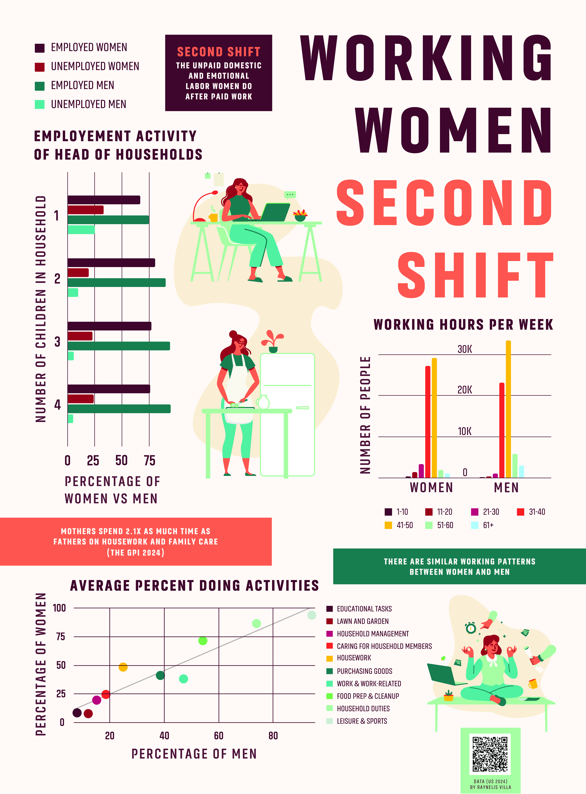
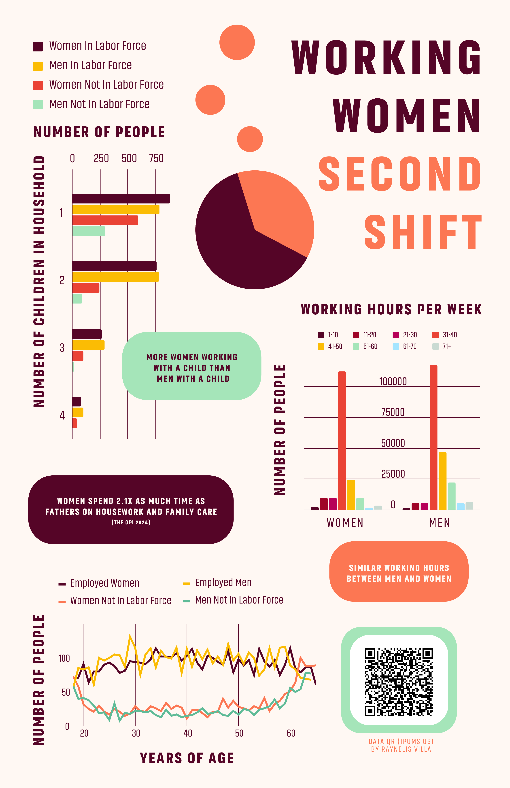

Working Women Second Shift
Poster

A Social Poster
This project was created to bring social awareness on gender inequality gaps through visuals. This campaign includes a poster that presents the idea of women working the second shift. The second shift is the unpaid labor that women do outside of their career working hours.
Tool Used
- Adobe Illustrator
Project Timeline
Week 1 & 2: Concept & Research
Notes and Assignment thoughts:
My topic is gendered labor and the second-shift. This topic covers how gender roles and responsibilities affect women's work-life and the changes that happen in household. This data includes information on household income, number of children, age, hours worked per week, occupation, and self-employment status. This data is a sample from a large data set from IPUMS (US Census Data for social, economic, and health research). This data is from tens of thousands of households so I adjusted the sample size on the website. I can add more relevant columns to the data if I find anything interesting when creating graphs.
Week 3: Prototyping
Set up hierarchy and chart position.
Week 4: Final Designs
Iterated the design by changing information and structure.
Prototyping
